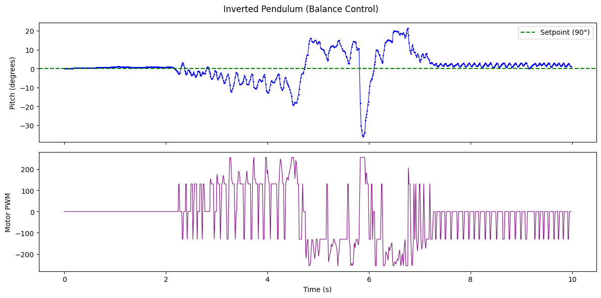
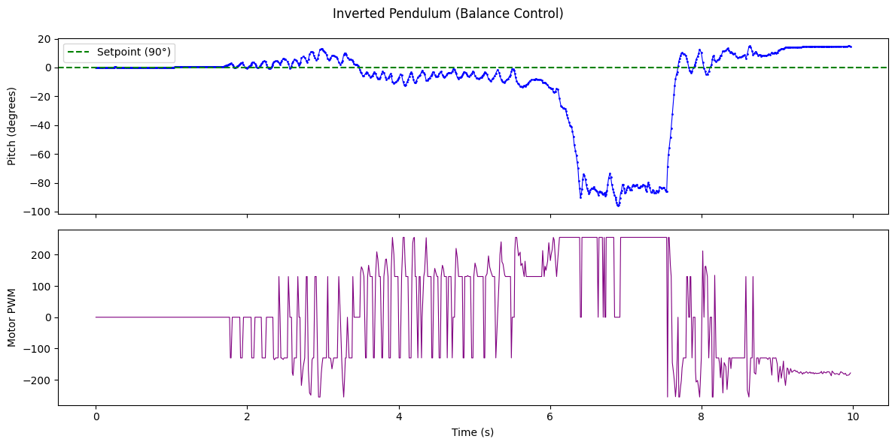
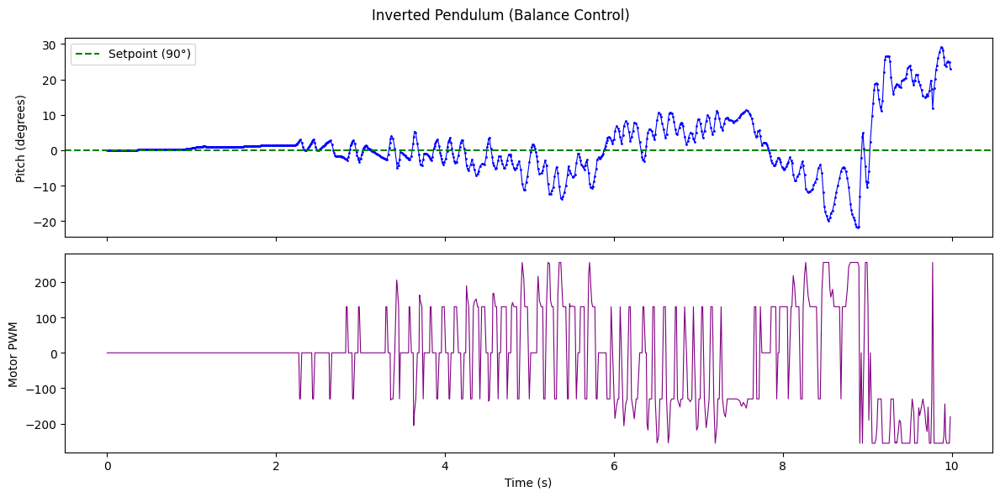

Objective
In this lab, I built a closed-loop controller to balance the robot on two wheels in an inverted pendulum configuration. The controller reads pitch angle from the IMU gyroscope and drives the motors forward or backward to keep the robot upright. I collaborated with Clarence Dagins and Rushika Prasad on this lab. I designed the initial code architecture and provided the robot, Rushika handled the Jupyter notebook integration for remote gain tuning and data logging, and Clarence performed the physical testing with my assistance.
Approach
We chose to start the robot in the upright position and stabilize it with a PID controller, rather than attempting to drive forward and flip into a wheelie. This allowed us to isolate the balance controller without also needing to time the flip. One person holds the robot upright while another runs the BALANCE command from the Jupyter notebook, which provides a three-second countdown. At the moment the command arrives, the firmware zeroes the integrated pitch so the current orientation becomes the 0° setpoint.
Controller Design
Inverted Pendulum Dynamics
An inverted pendulum is inherently unstable. When the robot tilts by angle θ from vertical, gravity exerts a restoring torque. For a rigid body pivoting about the wheel axle, the rotational equation of motion is:
I = moment of inertia about axle
m = robot mass, g = 9.81 m/s²
L = distance from axle to center of mass
τmotor = torque from wheels pushing the ground
c = damping coefficient (friction, air resistance)
For small angles, sin(θ) ≈ θ, which linearizes the system:
In state-space form with state vector x = [θ, θ̇] and input u = τmotor:
A = [[0, 1], [m·g·L/I, -c/I]]
B = [[0], [-1/I]]
The positive eigenvalue in A confirms the system is open-loop unstable: without active control, any perturbation from vertical grows exponentially. The PID controller provides u to counteract this by applying a corrective torque through the wheels. The P term acts as a restoring spring (pushes back proportionally to tilt), the D term acts as a damper (resists angular velocity to prevent overshoot), and the I term corrects any persistent offset from the setpoint.
PID Implementation
The balance controller is implemented in runPitchPID() in pid.cpp and runs when pid_mode == 2. Each iteration reads the IMU, integrates gyrY() using micros() precision to obtain the current pitch angle, and computes a motor command:
// Integrate gyro for pitch
unsigned long now_us = micros();
float dt = (now_us - prev_orient_time_us) / 1000000.0;
if (dt > 0 && dt < 0.1) {
pitch_g += myICM.gyrY() * dt;
}
float error = pid_setpoint - pitch_g;
// P term
float p_term = kp * error;
// I term with anti-windup
i_term += error * ki * dt;
i_term = constrain(i_term, -300, 300);
// D term: use raw gyrY() directly (pitch angular rate)
float gyro_rate = myICM.gyrY();
float d_term = kd * (-gyro_rate);
if (abs(d_term) < 1.0) d_term = 0; // LPF threshold
float raw_output = p_term + i_term + d_term;
int motor_cmd = constrain((int)raw_output, -255, 255);
// Brake if fallen or at target
if ((abs(error) <= 2.5) || (abs(error) >= 87.5)) {
brakeMotors();
}The D term uses the raw gyro angular rate directly rather than numerically differentiating the error, which avoids amplifying high-frequency noise. A small threshold zeros out tiny D values to reduce motor chatter. The controller brakes within 2.5° of setpoint to prevent jitter from the deadband, and also brakes if error exceeds 87.5° (the robot has fallen and further driving would just send it across the floor). The I term includes anti-windup clamping at +/-300 to prevent integral saturation during large sustained errors.
Gain Tuning
Gains were sent over BLE using SET_PID_GAINS, allowing tuning without reflashing. Over 20+ runs we adjusted values on carpet until the robot could balance. With low Kp the robot fell immediately with no oscillation. Kp was increased until it could push back, Kd was added to damp the oscillation, and Ki was added last to correct persistent lean.
Final gains: Kp = 12.25, Ki = 0.8, Kd = 0.75
Physical Modifications
To improve stability, we added screws into the battery compartment to increase the total mass and lower the center of mass. A lower center of mass moves the pendulum's pivot point closer to the center of gravity, reducing the gravitational torque for a given tilt angle and giving the controller more time to react.
We also experimented with IMU placement. With the IMU mounted at the top of the robot (furthest from the axle), the controller felt noticeably more responsive than with the IMU at the bottom. This makes physical sense: angular acceleration is the same everywhere on a rigid body, but the linear acceleration experienced by the IMU increases with distance from the pivot. At radius r from the axle, the tangential acceleration is a = r · α, where α is the angular acceleration. A larger r amplifies the acceleration signal the IMU sees, effectively giving the sensor a higher signal-to-noise ratio for small tilts. The tradeoff is that this placed the heavier battery pack (with screws) at the top, which raises the center of mass and makes the pendulum less stable. In practice, the improved sensor responsiveness seemed to outweigh the stability penalty, though we did not test this rigorously enough to confirm objectively.
Battery Voltage: The Hidden Variable
One of the most important findings from this lab was the dramatic effect of battery voltage on controller performance. The 850mAh motor LiPo has high internal resistance, and at 3.9V (partially depleted), the same PWM commands produced noticeably less torque. The robot would fall over using gain values that had worked minutes earlier. We spent significant time re-tuning gains, thinking the controller was broken, before realizing the battery had sagged.
After charging the battery to 4.20V (full), the exact same code with the exact same PID constants performed dramatically better. The robot went from barely balancing for 2-3 seconds to consistently holding for 5+ seconds. No code changes at all. This highlights that for a system operating at the edge of its control authority (inverted pendulum with cheap motors), the power supply is just as critical as the control algorithm. For future work, monitoring battery voltage in real-time and scaling the PID output accordingly would make the controller robust to charge level.
Jupyter Integration
The notebook handles the full workflow over BLE: set gains with SET_PID_GAINS, start the run with BALANCE after a 3-second countdown, wait for the firmware timeout (10s), then pull logged data with GET_PID_LOG. Each log line contains a timestamp, pitch angle, and motor command.
ble.send_command(CMD.SET_PID_GAINS, "12.25|.8|.75")
time.sleep(1)
T.clear()
PITCH.clear()
MOT.clear()
ble.send_command(CMD.BALANCE, "")
time.sleep(12)
ble.send_command(CMD.GET_PID_LOG, "")
time.sleep(15)One firmware fix was required: GET_PID_LOG was sending pid_yaw_array for all non-position modes, but the balance controller writes to pid_pitch_array. A conditional check for pid_mode == 2 was added so the correct data array is transmitted.
Debugging
Several early attempts failed because the D term was reading gyrZ() (yaw axis) instead of gyrY() (pitch axis). The derivative was responding to the wrong rotational axis entirely, so the damping had no effect on pitch oscillation. Once corrected, the controller immediately showed improved stability.
BLE integration required effort since each team member had a different coding style. The robot also had a recurring issue where it would disconnect immediately after the balance command was sent. After troubleshooting the connection flow, this was resolved.
Results
Best run (Run 2): the robot balanced for just over 5 seconds before it drifted into an obstacle and fell. The robot stayed upright with some visible twitching as the controller made small corrections back and forth. Within ~10° of the setpoint, corrections were quick and consistent. But once it tilted past that band, recovery became much less reliable, and the robot eventually tipped too far to the left. This was a consistent failure mode across runs; it almost always fell to the left, suggesting either a slight mechanical asymmetry, accumulated gyro bias, or even that our right-hand dominance caused us to consistently release the robot with a slight leftward lean.
Interestingly, the robot was surprisingly good at recovering after minor crashes. On several runs, it would hit an obstacle, bounce back, and continue balancing for a few more seconds before eventually falling.

Best run. Top: pitch angle. Bottom: motor PWM. Gains: Kp=12.25, Ki=0.8, Kd=0.75.
Additional runs:


Discussion
The controller demonstrated short-duration balancing at the edge of the system's control authority. The primary limitation is gyro drift from integrating angular rate. Any sensor bias accumulates over time and shifts the effective setpoint, causing the robot to lean progressively in one direction. A complementary filter combining gyro and accelerometer pitch data would mitigate this, and DMP integration (as discussed in Lab 6) would provide a drift-free pitch estimate.
The consistent leftward fall across runs could stem from mechanical asymmetry (uneven weight distribution or motor strength), accumulated gyro bias, or even operator bias from consistently releasing the robot with a slight lean. A small setpoint offset could compensate, but we did not have enough runs to calibrate this precisely. The inverted pendulum problem also demands faster control loops than our previous labs; the ~8ms loop time was adequate for orientation control but borderline for balancing, where the instability grows exponentially with response delay.
The most impactful future improvement would be real-time battery voltage monitoring with gain scaling, since as shown above, a 0.3V difference completely changes the system's behavior without any code changes.
Acknowledgements
Clarence Dagins performed physical testing with my assistance. Rushika Prasad built the Jupyter notebook integration for remote gain tuning and data logging. I designed the code architecture and provided the robot. Claude AI was used for assistance with debugging and structuring this report.